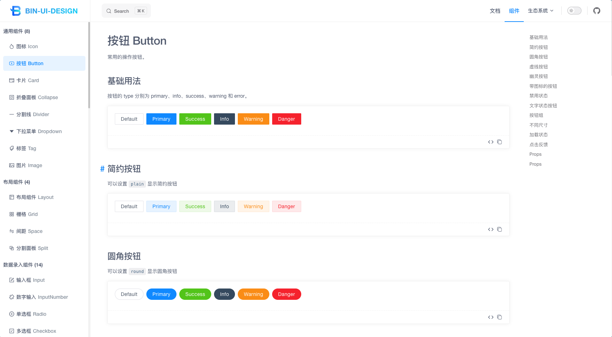
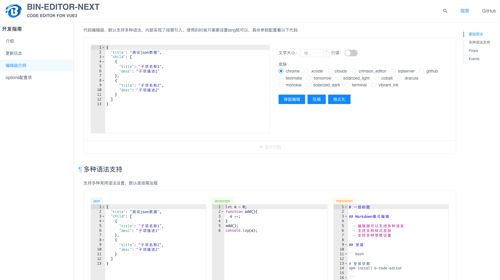
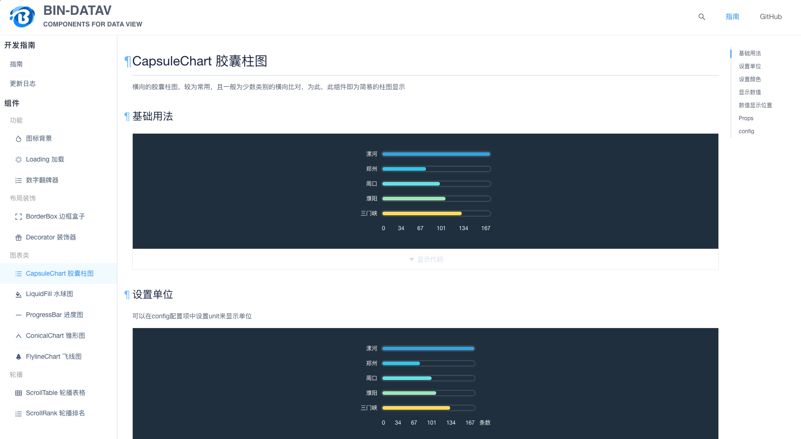
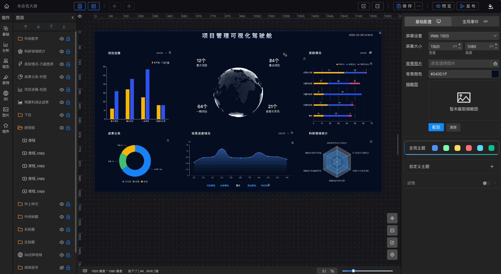
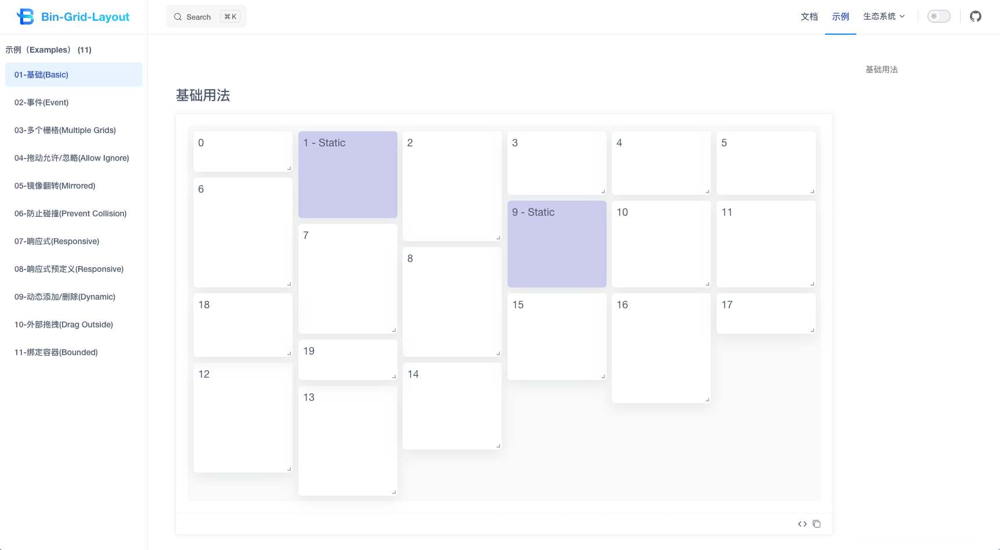
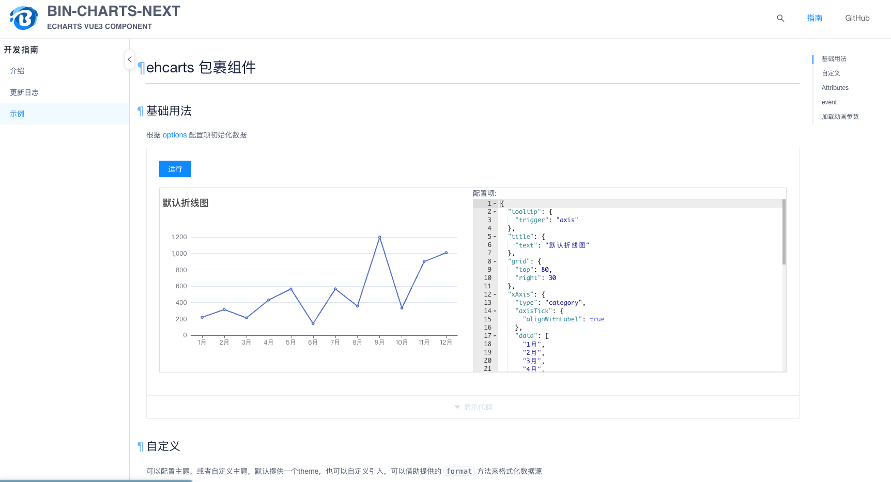
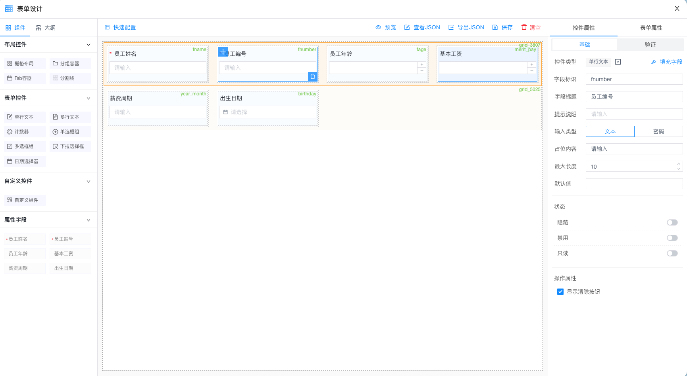
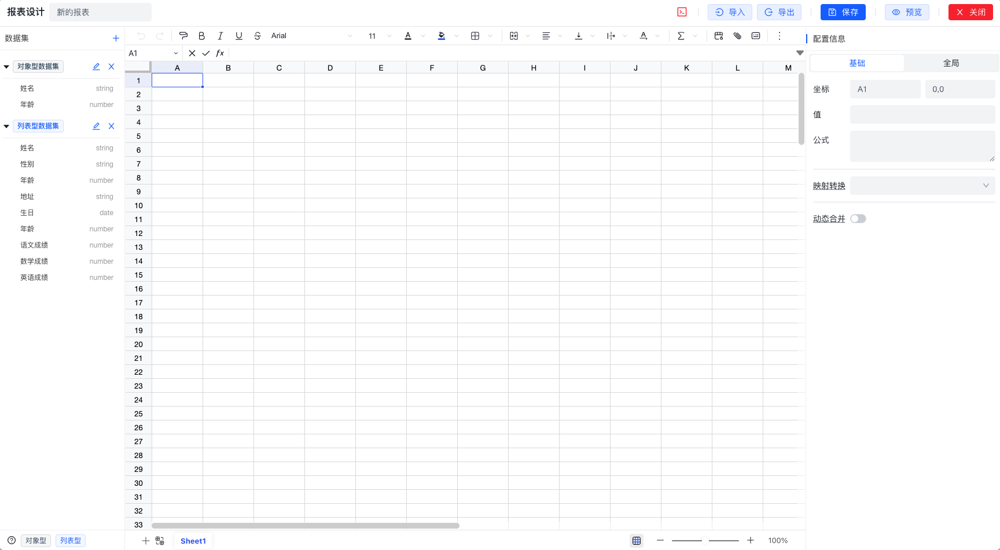
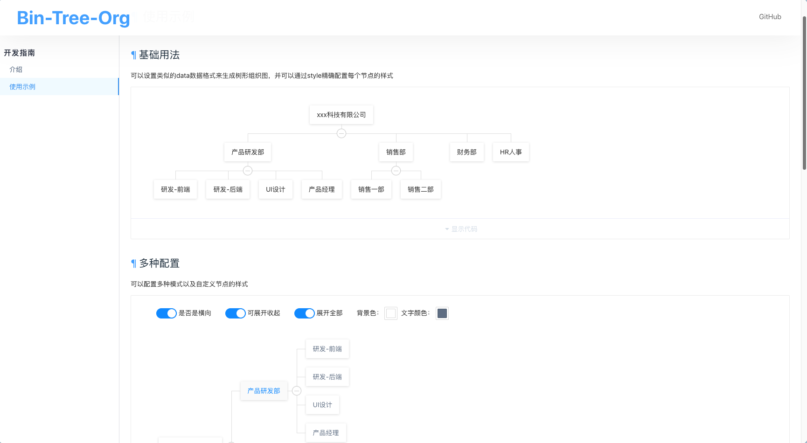
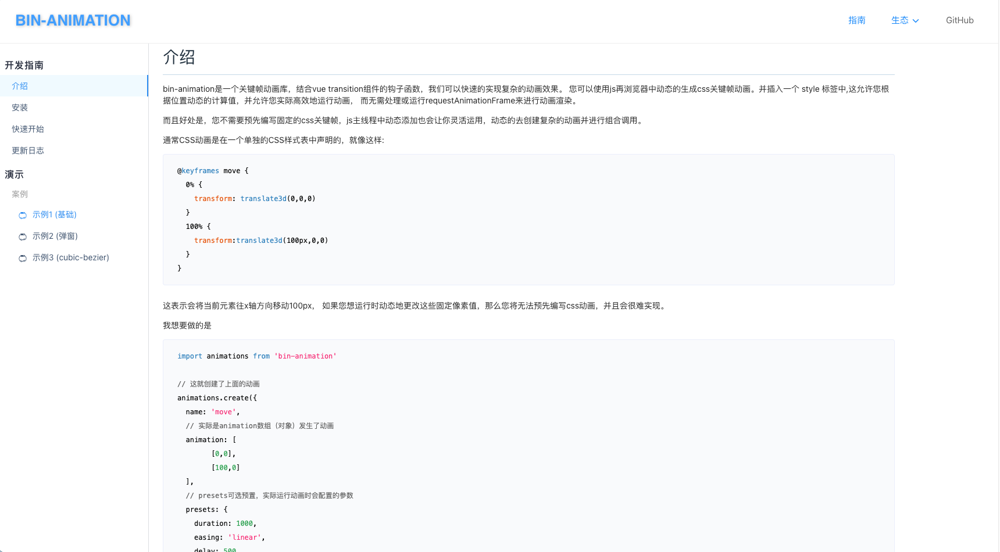

一个基于 Vue3 和 TypeScript 的组件库
基于 bin-ui 的后端管理系统

基于 brace 的 Vue3 编辑器组件库

一个基于 Vue3 和 TypeScript 的数据可视化组件库

vite + vue3 数据可视化大屏框架

一个基于 Vue3 和 TypeScript 的网格布局组件库

一个基于 Vue3 和 echarts 的图表组件库

一个基于 Vue3 和 TypeScript 的表单生成器组件库

一个基于 Vue3 和 univer 的 Excel 表格组件库

一个基于 Vue2 的组织树组件

基于vue，结合transition钩子函数配合的css3动画库
js关键帧动画库